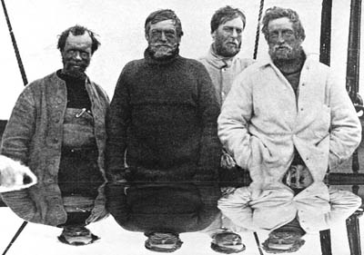

The Return of Cyclical Adventurism
by phil on Thursday Dec 6, 2012 8:25 PM

Now that every section of the Earth has been explored, where are the next adventures? Perhaps the beginning of post-modernism occurred not at the end of World War II, but when Antartica was discovered. Or maybe that's why all the world wars happened, because that's when land became truly scarce, and there was nothing left to colonize; the great nations started getting anxious. There was nothing left to explore. Well, there was the moon, but we gathered nothing from there. So perhaps we're at the end of all linear explorations. In a linear exploration model, each new discovery accumulates and adds to the previous exploration.
Instead now, we have cyclical explorations. We explore things that have already been treaded on, but have been forgotten for a handful of generations. Sometimes, in our own feverish excitement, we believe we're explorers. For example, the psychoactive pioneers of Timothy Leary and Terrence McKenna are really just re-discovering old shamanistic practices that have been lost for generations. The radical 1960s were in many ways a recapitulation of the Transcendentalists of Emerson's era or of prior anarchists.
All exploration is local now. You are a pioneer if you are the first of your tribe to do something, to forge out into the woods, and come back with the good news. In many ways, this has been the dominant model of exploration. The Native Americans, for example, didn't have any illusions about whether the lands they discovered had prior human contact. What mattered to them was that they found new territory and game for their people.
I often travel, with a sense of adventure, with the wind behind my back and the excited encouragement of my peers. And when I arrive, I find that the land has already been discovered, and all epiphanies I was expecting to get have already been treaded on, over and over again, to the nausea of the locals. I could then simply stop traveling, but then I would have no stories to tell.